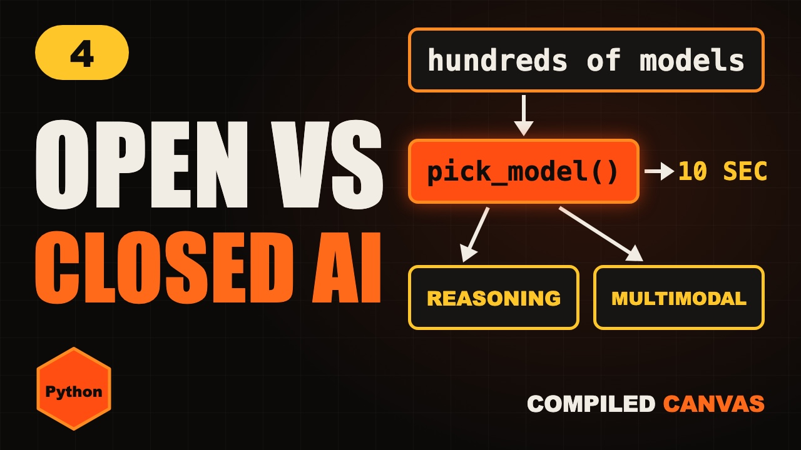

Home / Generative AI / Lesson 4
Lesson 4 · PythonOpen vs Closed AI Models, Reasoning and Multimodal
Open vs closed AI models, open weight vs open source, reasoning models and multimodal models, explained simply, with a Python function to pick one.

1Too many models
There are hundreds of AI models now. Closed ones, open ones, ones that think before they answer, ones that can see.
Pick the wrong one, and you pay too much, wait too long, or get worse answers.
By the end of this video, you'll pick the right kind in about ten seconds.
2Closed models
Closed models live on the company's servers. You use them through an app or an API, but you can't download them.
OpenAI's GPT models, Anthropic's Claude and Google's Gemini are all closed.
The good side. They're usually among the strongest, and you need no hardware. One API call and you're running.
The other side. You pay for every use, your data goes to their servers, and you depend on them.
3Open models
Open models let you download the model's weights, the billions of numbers it learned, and run it yourself.
Meta's Llama, Mistral, Alibaba's Qwen, DeepSeek and Google's Gemma are popular open families.
The good side. Your data stays with you, you can fine-tune it, and there's no fee per token.
The other side. You need GPUs to run it, and you have to manage it all yourself.
4Open source vs open weight
Here's something many people get wrong. Most open models are really open weight, not fully open source.
Open weight means you get the finished model. Open source would also mean the training data and the code that made it.
Think of a cake. Open weight gives you the cake. Open source gives you the cake and the full recipe.
Always read the licence too. Some open models limit how you can use them commercially.
5Reasoning models
Reasoning models think step by step before they answer. They write out working, a bit like you do on a maths exam.
They're much better at maths, tricky code and planning.
But that thinking is made of tokens too. So they're slower, and they cost more.
For a simple question, like translating a sentence, a quick model is better. Save reasoning for hard problems.
6Multimodal and size
Multimodal models understand more than text. Images, audio, and sometimes video.
You can show one a photo of a receipt and ask for the total. Or speak to it and hear it reply.
Models also come in sizes, counted in parameters. Small ones can run on a laptop. They're fast and cheap.
Big ones are smarter, but slower and more expensive. Bigger isn't always better. It's about the job.
7Choose a model in Python
Type it out yourself, or copy it. It runs with python3 pick_model.py.
def pick_model(private=False, image=False, hard=False):
if private:
return "open-weight model on your server"
if image:
return "multimodal model"
if hard:
return "reasoning model"
return "small fast model"
print(pick_model()) # small fast model
print(pick_model(hard=True)) # reasoning model
print(pick_model(private=True)) # open-weight...
print(pick_model(image=True))small fast model reasoning model open-weight model on your server
Here's the whole choice as a tiny Python function. First question. Must the data stay private? Use an open-weight model on your own server.
Second. Does it need to see images or hear audio? Use a multimodal model.
Third. Is it a hard maths or code problem? Use a reasoning model.
Otherwise, start with a small, fast model. It's cheaper, and often good enough.
Your turn. Pause. You're building a chatbot for a hospital, and patient data can't leave the building. Which kind?
An open-weight model, running on the hospital's own servers.
8Cheat sheet
- Closed: API only
- Open weight: run it yourself
- Open weight ≠ open source
- Reasoning: hard problems
- Multimodal: images, audio
- Small fast, big smart
9Quick quiz
1. Can you download a closed model's weights?
No. You can only use it through their API or app.
2. What makes reasoning models slower?
Their thinking is made of extra tokens.
3. A model that can read a photo is called what?
Multimodal.
10Homework
Your homework. Run the pick model program from this lesson. All the Python code is on this page, ready to copy. Then add your own question to it, like whether it must work offline. And tell me in the comments: which model do you use most today?